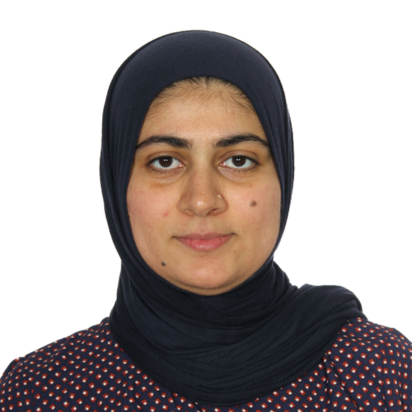

Wahdat Safia

Summary
A Computer Science graduate with 6+ years of professional experience in a premier research organization. Expertise in full-stack development, cloud computing, high-performance computing (HPC), evolutionary algorithm, ML, and AI.
Professional Experience
BHABHA ATOMIC RESEARCH CENTRE (BARC) |
Mumbai, India |
|
Developed and managed on-site private cloud infrastructure and high-performance computing systems
|
Scientific Officer (Software Engineer) |
Aug 2015 – Jun 2022 |
- Designed and developed an evolutionary algorithm for virtual machine placement in cloud computing environment to minimize resource wastage on physical servers; Integrated it as a customized scheduler in OpenStack based private on-site cloud system
- Automated Virtual Machines (VMs) migration process to migrate VMs from legacy to the new cloud infrastructure, saving 100+ hours of manual effort
- Deployed a two-tier private docker registry architecture and a containerized environment in the private cloud for intranet users
|
Trainee Scientific Officer (Junior Software Engineer) |
Aug 2014 – Jul 2015 |
- Designed and developed a monitoring and metering software system for BARC private on-site cloud computing service
|
Skills
Programming:
Proficient in Python, Linux shell scripting, and CentOSSoftware/Framework
OpenStack, Docker, Tensorflow, Keras, Sklearn, Scikit, VTK, PyQt, GitLab, MongoDB, MariaDB, and Django
Education
Homi Bhabha National Institute (HBNI) |
Mumbai, India |
Master of Technology, Computer Engineering with specialization in Nuclear Engineering |
August, 2016 |
|
A mandatory training program for all new employees joining BARC – the course was part of the BARC training school
- GPA: 83.8/100
- Recipient of 2015 Dr. Homi Bhabha Prize (granted to the top performer of the class)
|
JAMIA MILLIA ISLAMIA UNIVERSITY (JMI) |
New Delhi, India |
Bachelor of Technology, Computer Engineering |
June, 2013 |
- GPA: 83.8/100
- Recipient of 2015 Dr. Homi Bhabha Prize (granted to the top performer of the class)
|
Courses
- Python beyond the basics – object-oriented programming by Infinite Skills (a Canadian e-learning company)
- Python and Django full-stack web developer boot camp by Jose Portilla
- Deep Learning Specialization certification course by Andrew Ng
- Machine Learning by Andrew Ng
Additional Activities
- Developed an Android application for collecting funds for cultural events in the local community
- Conducted a Machine Learning workshop at Indian Women Scientist Association, Mumbai, held on 3-5th Feb 2020
- Teaching volunteer since Aug 2017 at Vinimay trust, a renowned NGO working with underprivileged children and youth in Mumbai
Contact Me